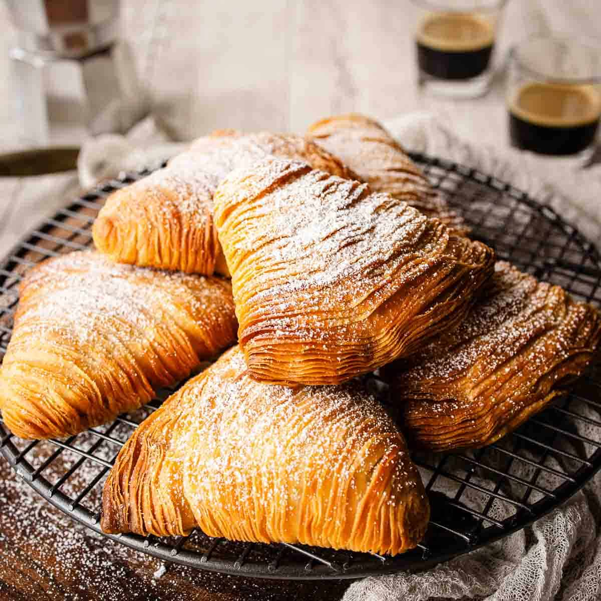

Home
Sfogliatelle Recipe
Final Product

Sfogliatelle, also known as "lobster tail" pastry, is a traditional Italian pastry that originated in the Campania region, particularly in Naples.
The name "sfogliatelle" means "many layers" in Italian, which perfectly describes the pastry's distinctive texture.
Sfogliatelle are made from thin layers of dough that are rolled and shaped into a shell-like form, filled with a sweet ricotta-based filling often flavored with citrus zest and cinnamon.
The result is a crispy, flaky exterior that encases a creamy and flavorful interior, making sfogliatelle a beloved treat in Italian cuisine.
Ingredients
- 2 cups all-purpose flour
- 1/4 cup granulated sugar
- 1/2 teaspoon salt
- 1/2 cup unsalted butter, melted
- 1/2 cup water
- 1 cup ricotta cheese
- 1/4 cup semolina flour
- 1/4 cup sugar
- 1 teaspoon vanilla extract
- 1/2 teaspoon ground cinnamon
- Zest of 1 lemon
- Powdered sugar for dusting
Directions
- In a mixing bowl, combine the all-purpose flour, granulated sugar, and salt.
Gradually add the melted butter and water, mixing until a dough forms.
Knead the dough on a floured surface for about 5 minutes until smooth.
Wrap the dough in plastic wrap and let it rest for 30 minutes.
- In another bowl, mix the ricotta cheese, semolina flour, sugar, vanilla extract, ground cinnamon, and lemon zest until well combined.
Set aside.
- Roll out the rested dough into a thin rectangle on a floured surface.
Brush the surface with melted butter.
Starting from one long edge, tightly roll the dough into a log.
Cut the log into 1-inch thick slices.
- Take each slice and flatten it slightly with your hands.
Using your fingers, stretch and shape each piece into a shell-like form, creating layers.
Place a spoonful of the ricotta filling into the center of each pastry.
Fold the edges over the filling, leaving the top open.
- Preheat the oven to 375°F (190°C).
Place the filled pastries on a baking sheet lined with parchment paper.
Bake for 25-30 minutes or until golden brown and crispy.
Remove from the oven and let cool slightly.
Dust with powdered sugar before serving. Enjoy your delicious sfogliatelle!